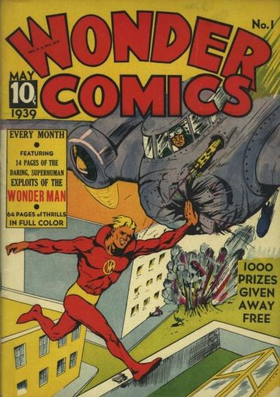

Series: 2 issues 1939
Publisher: Fox Features
Covers by Will Eisner
Stories by Will Eisner, S.M. Iger, and Bob Kane
Illustrations by Will Eisner, S.M. Iger, Adolphe Barreaux, Bob Powell, Chuck Wilson, Glenda Carol and Bob Kane
- The notorious comic from Victor Fox and Fox Feature Syndicate that introduced Wonder Man, created by the legendary Will Eisner and designed to imitate DC's Superman. The result was a DC lawsuit that remains a subject of debate, although its historical significance is clear.
- A power-ring provided by a mysterious Tibetan transforms timid radio engineer Fred Carson into the superhuman Wonder Man, in a story by Will Eisner.
- Reporter Patty O'Day parachutes onto a cruise ship to cover a fire; Navy sailors Spark Stevens and his pal Chuck quit their constant arguing to save their ship from hijackers, in a story by Batman legend Bob Kane.
- Winged Wonders; Wonder Man
- Shorty Shortcake
- Wonders That Are True
- Patty ODay
- Men Who Made the West
- Dr. Fung
- The Wrath of Allah
- Tex Dawson
- Sport Album
- Movie Memos
- K-51, Spies at War
- Gang-Buster Robinson
- Spark Stevens
- Some Fun
- Prof. Penpusher's Cartooning Class
- Wonder Stamp Club
- Belly Busters.